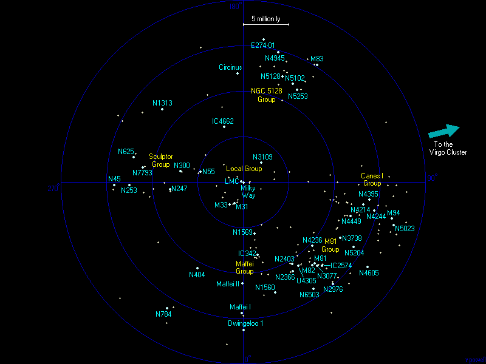
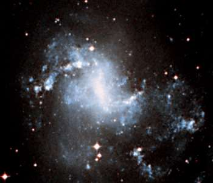
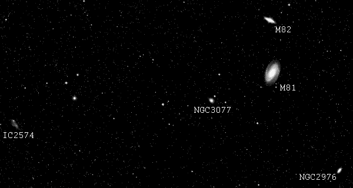

هذه خريطة بالمجرات الموجودة ضمن مقياس 20 مليون سنة ضوئية وقد رسمت على المستوى المجري. تقع معظم المجرات بشكل تقريبي في المستوى المجري (تم إنشاء إحداثيات مجرية فائقة بسبب وقوع العديد من المجرات القريبة بالقرب من هذا المستوي). تم ذكر العديد من المجرات الكبيرة واللامعة والموجودة ضمن الـ 20 مليون سنة ضوئية مع الاسم، وكذلك رسمت مواضع بعض المجرات القزمة الأخفت.


إلى اليمين - NGC 1313، مجرة لامعة ولكن معزولة ومصنفة على أنها مجرة لولبية ذات عصا (أيضًا تمتلك أذرع لولبية قصيرة وغير منتظمة). يعتقد بأن تصادمًا قد وقع بينها وبين مجرة تابعة خلال بضعة بلايين من السنين الماضية، والمادة الظاهرة في الطرف السفلي-اليميني من الصورة هي بقايا مجرة تابعة.
هذه لائحة بالمجرات الأكبر والألمع الموجودة ضمن مقياس 20 مليون سنة ضوئية. معظم تقديرات المسافة تم وضعها من قبل إيغور كراشينتسيف Igor Karachentsev وزملائه باستخدام مرصد الفيزياء الفلكية المتخصص في دراسة تجمعات المجرات القريبة (في روسيا). بعض المجرات لم يتم تأكيد المسافة إليها، وخصوصًا مجرات تجمعات مافي Maffei وكذلك بعض المجرات بعيدًا إلى النصف الجنوبي من القبة السماوية والتي لا يمكن رؤيتها بالتلسكوبات الروسية.
| الاسم | المطلع المستقيم (RA) | الميل (Dec) | الطول المجري الفائق (L°) | العرض المجري الفائق (B°) | التجمع | القدر الظاهري الأزرق | النوع | الحجم (كيلو سنة ضوئية) | المسافة (مليون سنة ضوئية) |
|---|---|---|---|---|---|---|---|---|---|
| NGC45 | 00 13.9 | -23 10 | 271.4 | +2.9 | - | 11.03 | Sc | 35 | 14.2 |
| NGC55 | 00 15.0 | -39 12 | 256.3 | -2.4 | Sculptor | 8.42 | Irr | 45 | 4.9 |
| M31, NGC224 | 00 42.7 | +41 16 | 336.2 | 12.5 | Local | 4.36 | Sb | 140 | 2.6 |
| NGC247 | 00 47.2 | -20 46 | 275.9 | -3.7 | Sculptor | 9.67 | Sc | 50 | 8.1 |
| NGC253 | 00 47.6 | -25 18 | 271.6 | -5.0 | Sculptor | 8.04 | Sc | 100 | 12.9 |
| SMC | 00 52.7 | -72 50 | 224.2 | -14.8 | Local | 2.70 | Irr | 15 | 0.2 |
| NGC300 | 00 55.0 | -37 42 | 259.8 | -9.5 | Sculptor | 8.72 | Sc | 45 | 7.1 |
| NGC404 | 01 09.5 | +35 43 | 331.9 | 6.2 | - | 11.21 | S0 | 10 | 10.8 |
| M33, NGC598 | 01 33.8 | +30 39 | 328.5 | -0.1 | Local | 6.27 | Sc | 60 | 2.9 |
| NGC625 | 01 35.1 | -41 26 | 257.3 | -17.7 | - | 11.71 | Irr | 20 | 13? |
| NGC784 | 02 01.3 | +28 50 | 328.8 | -6.3 | - | 12.23 | Sd | 30 | 16.3 |
| Maffei I | 02 36.3 | +59 39 | 359.3 | 1.5 | Maffei | 14.5 | E | >20 | 14.4 |
| Maffei II | 02 41.9 | +59 36 | 359.6 | 0.8 | Maffei | 16.0 | Sb | >25 | 12? |
| Dwingeloo 1 | 02 56.9 | +58 55 | 0.0 | -1.2 | Maffei | 18.8 | Sb | >25 | 16.3 |
| NGC1313 | 03 18.2 | -66 30 | 228.0 | -28.2 | - | 9.20 | Sc | 35 | 13.5 |
| IC342 | 03 46.9 | +68 05 | 10.6 | 0.4 | Maffei | 9.10 | Sc | 50 | 8.1 |
| NGC1569 | 04 30.8 | +64 50 | 11.9 | -4.9 | Maffei | 11.86 | Irr | 5 | 5.8 |
| NGC1560 | 04 32.8 | +71 52 | 16.0 | 0.8 | Maffei | 12.16 | Sc | 35 | 12.6 |
| LMC | 05 23.6 | -69 45 | 215.8 | -34.1 | Local | 0.91 | Irr | 30 | 0.2 |
| NGC2366 | 07 28.9 | +69 12 | 29.5 | -4.9 | M81 | 11.43 | Irr | 25 | 11.2 |
| NGC2403 | 07 36.8 | +65 36 | 30.8 | -8.3 | M81 | 8.93 | Sc | 70 | 10.6 |
| UGC4305, HoII | 08 19.1 | +70 43 | 33.3 | -2.4 | M81 | 11.10 | Irr | 25 | 10.9 |
| NGC2976 | 09 47.3 | +67 55 | 41.3 | -0.8 | M81 | 10.82 | Sc | 25 | 14.8 |
| M81, NGC3031 | 09 55.6 | +69 04 | 41.1 | 0.6 | M81 | 7.89 | Sa | 90 | 12.0 |
| M82, NGC3034 | 09 55.8 | +69 41 | 40.7 | 1.1 | M81 | 9.30 | Irr | 40 | 12.0 |
| NGC3077 | 10 03.4 | +68 44 | 41.9 | 0.8 | M81 | 10.61 | Irr | 20 | 12.2 |
| NGC3109 | 10 03.1 | -26 10 | 137.9 | -45.1 | Local | 10.39 | Irr | 25 | 4.1 |
| IC2574 | 10 28.4 | +68 25 | 43.6 | 2.3 | M81 | 10.80 | Irr | 50 | 12.4 |
| NGC3738 | 11 35.8 | +54 31 | 59.6 | 1.8 | Canes I | 12.13 | Irr | 10 | 12.6 |
| NGC4214 | 12 15.6 | +36 19 | 79.0 | 1.6 | Canes I | 10.24 | Irr | 35 | 13.4 |
| NGC4236 | 12 16.8 | +69 28 | 47.1 | 11.4 | M81 | 10.05 | Sd | 70 | 10.5 |
| NGC4244 | 12 17.5 | +37 48 | 77.7 | 2.4 | Canes I | 10.88 | Sc | 70 | 14.7 |
| NGC4395 | 12 25.9 | +33 32 | 82.3 | 2.7 | Canes I | 10.64 | Irr | 50 | 14.4 |
| NGC4449 | 12 28.2 | +44 05 | 72.3 | 6.2 | Canes I | 9.99 | Irr | 20 | 12.6 |
| NGC4605 | 12 40.0 | +61 37 | 55.5 | 12.0 | - | 10.89 | Sc | 30 | 16.9 |
| M94, NGC4736 | 12 51.0 | +41 07 | 76.2 | 9.5 | Canes I | 8.99 | Sa | 60 | 17.0 |
| NGC4945 | 13 05.4 | -49 28 | 165.2 | -10.2 | NGC5128 | 9.30 | Sc | 90 | 15? |
| NGC5023 | 13 12.2 | +44 02 | 74.0 | 13.9 | Canes I | 12.85 | Sc | 30 | 17.6 |
| NGC5102 | 13 21.9 | -36 38 | 153.4 | -4.1 | NGC5128 | 10.35 | S0 | 30 | 12.1 |
| NGC5128 | 13 25.4 | -43 01 | 159.8 | -5.2 | NGC5128 | 7.84 | S0 | 90 | 12.4 |
| NGC5204 | 13 29.6 | +58 26 | 59.4 | 17.8 | - | 11.73 | Irr | 20 | 14.8 |
| M83, NGC5236 | 13 37.0 | -29 52 | 147.9 | 1.0 | NGC5128 | 8.20 | Sc | 60 | 15.2 |
| NGC5253 | 13 39.9 | -31 38 | 149.8 | 1.0 | NGC5128 | 10.87 | Irr | 15 | 11.7 |
| Circinus | 14 13.2 | -65 20 | 183.1 | -6.4 | - | 12.10 | Sb | 25 | 12? |
| ESO274-01 | 15 14.2 | -46 49 | 171.6 | 10.3 | NGC5128 | 11.70 | Sc | 55 | 16? |
| IC4662 | 17 47.1 | -64 38 | 199.2 | 8.6 | - | 11.74 | Irr | 5 | 6.5 |
| NGC6503 | 17 49.5 | +70 08 | 33.1 | 34.6 | - | 10.91 | Sc | 35 | 17.0 |
| NGC7793 | 23 57.9 | -32 35 | 261.3 | 3.1 | Sculptor | 9.63 | Sc | 35 | 11.9 |
العمود 1: اسم المجرة.
العمود 2: إحداثي المطلع المستقيم بالساعات والدقائق من الحولية الفلكية للعام 2000.
العمود 3: إحداثي الميل بالدرجات والدقائق من الحولية الفلكية للعام 2000.
العمود 4: إحداثي الطول المجري الفائق.
العمود 5: إحداثي العرض المجري الفائق.
العمود 6: التجمع الذي تنتمي إليه المجرة.
العمود 7: القدر الظاهري الأزرق للمجرة.
العمود 8: تصنيف نوع المجرة. E=بيضاوية; S0=عدسية; Sa,Sb,Sc,Sd=لولبية; Irr=غير منتظمة.
العمود 9: القطر التقريبي للمجرة مقدرًا بآلاف السنوات الضوئية.
العمود 10: المسافة إلى المجرة مقدرة بملايين السنين الضوئية مأخوذة من أحد المراجع المذكورة أدناه. ويمكن أن تتجاوز قيم الخطأ في تقدير المسافة ±20%.
 |